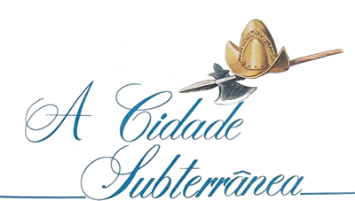
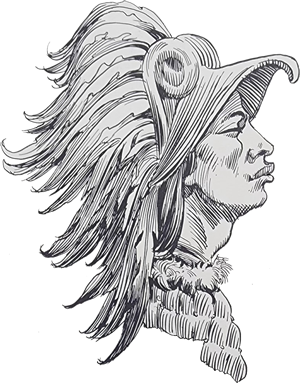
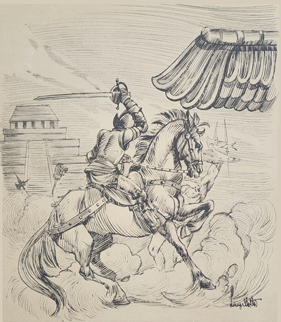
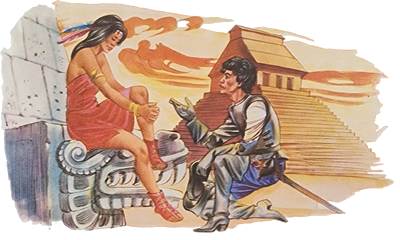
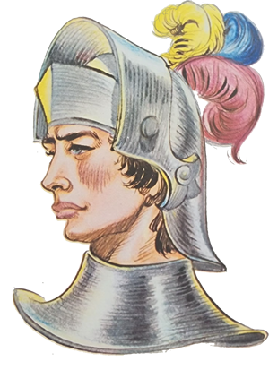
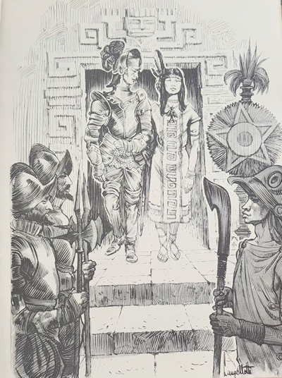
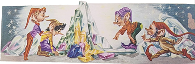
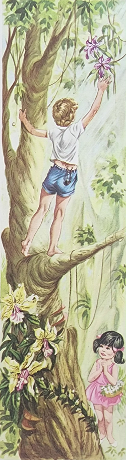
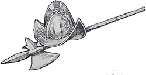

Baseado na descrição de C. Carvalho Negraes

Vamos encontrar nossos excursionistas na cidade de Diamantina, onde não perdem tempo em conhecer as curiosidades do lugar, que são tantas. Iberê e Carlinhos estavam empenhados numa interminável discussão por causa de uma pequena pedra muito bonita que haviam encontrado e que cada qual desejava guardar como lembrança. Carlinhos julgava-se com direito a ela por ter sido o primeiro a avistá-la; mas fora Iberê quem conseguira empalmá-la antes.
- Quem vê uma coisa primeiro é quem fica dono dela! Portanto essa pedra é minha! – disse Carlinhos.
- Vejam só o engraçadinho! – respondeu Iberê, segurando a relíquia com toda a força que possuía, receoso de um ataque imprevisto do companheiro. Uma coisa pertence a quem conseguir pegá-la! A pedra é minha e ninguém vai tirá-la de mim!
Carlinhos não se conformou:
- É melhor você me dar essa pedra por bem! Senão . . .
- Senão o quê? – quis saber Iberê com ar de desafio.
Vendo que a discussão não ia ter fim, o Arrelia, assumindo um ar filosófico, interveio:
- Francamente! Vocês estão discutindo por causa de uma pedra! E se fosse então um diamante? Puxa “viuda”! Tratem de chegar a um acordo!
Os dois meninos dirigiram-se ao Arrelia argumentando ao mesmo tempo e exigindo cada um para si a posse da pedra.

- É, não tem jeito mesmo – concluiu o Arrelia. Com esse entusiasmo, vocês não vão chegar a uma conclusão. Se fosse algo de comer, a gente poderia dar um jeito como naquela estória do Gavião e da Raposa, lembram-se? Ambos queriam o queijo, e o Guaxinim e o Macaco acabaram por comê-lo.
- Isso não! – exclamaram os dois meninos ao mesmo tempo, lembrando-se de como os dois briguentos haviam saído mal.
- Não precisam ter medo que pedra não se come – tranquilizou-os o Arrelia. Preciso encontrar uma outra solução.
Enquanto o Arrelia pensava com toda a vontade para solucionar a questão da pedra, os dois meninos concordaram numa trégua. As expressões do Arrelia eram as mais variadas e interessantes possíveis, demonstrando o esforço que lhe ia pelo cérebro: arregalava os olhos, apertava os lábios, sorria, ficava sério. Depois de observá-lo atentamente, Jaci comentou:
- Olhem o Arrelia. Dá até pena! Está saindo fumaça da sua cabeça de tanto que está pensando!
- “Verdaude”? – assustou-se ele, virando os olhos para ver se enxergava a própria cabeça.
Carlinhos impacientou-se com a demora da aguardada solução:
- Como é. Arrelia! Você não vai resolver? Quero que o Iberê dê logo a minha pedra!
Com toda a rapidez veio a resposta de Iberê:
- Sua? Se alguém tem direito a esta pedra sou eu! – abriu e fechou outra vez a mão, onde ficou bem escondido o motivo da discórdia.

- Calma! Calma! – pediu o Arrelia. Só mais um pouco de paciência que já dou um jeito! Não posso pensar com tanto barulho!
Nova trégua foi obedecida e as estranhas expressões do Arrelia começaram outra vez.
- Daqui a gente ouve o cérebro dele trabalhando – brincou Sérgio.
- Está com falta de lubrificação – começou Jaci. É por isso que ele não consegue pensar direito.
Novamente o Arrelia pediu silêncio e prosseguiu em suas reflexões para resolver tão sério problema.
Por fim, dando um suspiro de alívio que durou uma eternidade, ele comunicou às crianças que já sabia como proceder.
- Encontrei a solução – disse ele. Se bem que uma pedra feia e sem importância como essa não devia merecer todo o esforço mental que despendi. Mas não tem importância, não. Os sábios são assim mesmo. Não economizam a sabedoria que possuem.
- Ih! – exclamou Jaci. Agora é sábio! Viram o que deu pensar tanto? Desarranjou o cérebro dele!
Fingindo não ter ouvido, o Arrelia dirigiu-se aos dois meninos:
- Venham comigo que vou resolver o caso.
Seguiram os três para uma velha casa que havia poucos passos adiante. O Arrelia esticou-se o mais que pode e colocou a pedra num pequeno buraco da parede. Depois disse aos meninos:
- “Aqueule” que conseguir, dentro de um minuto, apanhar a pedra, fica sendo o seu dono.
Olhou o relógio e gritou: “Já!” Iberê e Carlinhos atiraram-se à parece com vontade. Deram tudo que puderam mas a pedra estava colocada num lugar muito mais alto do que eles podiam alcançar. No auge do desespero, Carlinhos pediu a Iberê:

- Levante-me que pegarei a pedra! Depressa!
O outro não aceitou a proposta:
- Bonitinho! E você fica com ela, não é? Levanta-me você.
Não chegaram a um acordo e o Arrelia avisou que o prazo estava esgotado. Aproximou-se da parede, esticou-se, retirou a pedra e guardou-a no bolso.
- E quem vai ficar com a pedra? – perguntou Iberê, estranhando a atitude do Arrelia.
- É, quem vai ficar? – quis saber também Carlinhos.
- Não foi combinado que quem a pegasse ficaria com ela? – disse o Arrelia.
Os meninos concordaram.
- Pois então – continuou ele. Eu peguei a pedra e portanto ela é minha.
- Puxa, Arrelia! Que golpe baixo! – criticou Jaci, que se havia aproximado com Marisa e Sérgio. E você disse que era uma pedra feia e sem importância, hein?
As críticas partiram de todas as crianças e foram tantas que ele teve de desistir de possuir a pedra.
- Está certo – disse ele, tirando-a do bolso. Vou tentar outra solução. Vou jogá-la o mais longe possível. Quem a pegar ficará com ela.
As outras crianças também resolveram participar e tomaram posição como se fosse uma corrida. O Arrelia atirou a pedra, e elas partiram, uma empurrando a outra. Ninguém a pegou porque ela sumiu num buraco no chão da calçada. Era fundo e ninguém conseguiu alcançá-la. Nem o Arrelia. Após muito tentar, ele falou:
- Lá se foi a pedra. O buraco é muito fundo! Acho que descobrimos a entrada da Cidade Subterrânea!
- Deixe de brincadeira! – exclamou Jaci. Qualquer um vê que é algum trabalho que está sendo feito! Não acha que é muito estreito para ser uma entrada de cidade?
- Garanto que não é – afirmou o Arrelia. Acho que descobrimos a entrada da cidade que dizem existir debaixo deste lugar.
- Uma cidade debaixo de outra? – espantou-se Iberê.
- Pois é! – exclamou o Arrelia. Dizem que foi construída por uma princesa inca chamada Acaiaca.

Como vocês devem saber. Os espanhóis invadiram o Império dos Incas e acabaram por dominá-los. Os Incas construíram um grande império que compreendia as regiões ocupadas pela Bolívia, Peru, Equador e Norte do Chile. Eram o povo mais civilizado da América do Sul. Muito bem. Diz a lenda que ao dar-se a invasão dos espanhóis, a princesa começou a gostar de um oficial dos invasores e ele por sua vez também começou a gostar da moça. Com tal namoro não concordaram nem os espanhóis nem os Incas. E o casal não conseguiu ficar “sossegaudo”. Os dois resolveram fugir. A princesa reuniu os súditos de sua confiança e partiram pela madrugada. Quando os outros deram pela cousa já era tarde demais. Os fugitivos encontravam-se fora de alcance. O casal e os súditos vieram para o Brasil e trataram de procurar um lugar propício para estabelecerem sua cidade. Gostaram do lugar em que hoje está Diamantina. Aí surgiu um problema. A princesa disse ao namorado:
- Se construirmos uma cidade, mais cedo ou mais tarde seremos facilmente encontrados por nossos perseguidores.
- Eu não havia pensado nisso! – exclamou o moço. E como há de ser?
- Não podemos ficar para sempre vivendo ao relento.
- Nem há dúvida. Mesmo que nós dois nos conformássemos, seus súditos acabariam por aborrecer-se.
- Precisamos construir casas para eles e um palácio para nós.
A princesa e o oficial resolveram convocar uma reunião com os súditos mais importantes. Discutiram o problema horas e horas e não conseguiram encontrar uma solução. Quando todos já estavam desanimados, o “namoraudo” da princesa teve uma ideia:
- Poderíamos construir nossa cidade sob a terra e dentro das montanhas!
A sugestão do mocó provocou uma confusão tremenda. Uns achavam possível fazer tal coisa, os outros não. A princesa, pouco a pouco foi ficando empolgada com a ideia:
- Seria maravilhoso! Imaginem! Todo um império subterrâneo! Uma porção de lindas casas, um palácio dourado, enorme, maravilhoso!
Ela ficou tão entusiasmada que seu entusiasmo acabou por contagiar os outros. Resolveram construir uma cidade subterrânea. Não foi fácil realizar o que desejavam. Já pensaram?
- Faço ideia! – disse Iberê pensativamente. Construir uma cidade subterrânea!
- Não deve ter sido brincadeira! – exclamou o Arrelia e continuou:

- Antes de darem início a uma obra tão importante, eles precisaram construir as ferramentas necessárias, o que, é claro, exigiu tempo e muito sacrifício, pois eram poucos os meios de que dispunham. Tão logo acharam que era possível. Puseram mãos à obra. Trabalhavam incansavelmente e com a maior rapidez possível porque temiam que seus perseguidores acabassem por encontrá-los. Inúmeras galerias foram sendo feitas. Quando sabiam estar sob montanhas, escavavam-nas por dentro o mais que podiam, formando enormes salões. Neles ergueriam depois suas casas e o palácio que deveria abrigar a princesa e o oficial espanhol.
Assim que parte da Cidade Subterrânea ficou pronta, o casal de “namoraudos” acomodou-se nela juntamente com os súditos. Passaram a viver dentro da terra, que nem fazem as formigas. Somente vinham para fora quando era muito necessário, como para caçar, pescar, colher frutas/ Nestas ocasiões deixavam sempre diversos guardas nos pontos mais elevados para que os avisassem caso seus perseguidores aparecessem.
Assim que ficou pronto o palácio, realizou-se o casamento da princesa e do oficial espanhol. Foi a festa de casamento mais estranha que já houve, uma vez que se realizou debaixo da terra.
- Deve ter sido uma festa bem triste – comentou Jaci. Debaixo da terra!
- É o que você pensa – retrucou o Arrelia. Foi muito bonita.
- Não posso compreender. Como pode ser bonita uma festa realizada sob a terra, no escuro?
O Arrelia e seus amiguinhos começaram a andar e ele prosseguiu:
- No escuro, não. Eles sempre usavam tochas. No dia da festa, então, foram acesas e colocadas dentro e fora das casas e do palácio e nas paredes das escava’~oes. Como os súditos haviam encontrado uma quantidade fabulosa de diamantes, colocaram-nos em todos os lugares possíveis. O palácio e as casas estavam quase cobertos pelas pedras preciosas. Eram tantos os diamantes que, refletindo a luz das tochas, iluminavam a cidade com uma luz fantástica. O chão fora atapetado de folhas verdes e macias que abafavam os passos, tornando completamente silencioso o movimento das pessoas. Por toda parte havia flores lindas e odorosas que enfeitavam e perfumavam o ambiente. Parecia um sonho.

Se alguém passasse por ali, fora da Cidade Subterrânea, não poderia imaginar nem de longe que dentro da terra se realizava uma festa maravilhosa.
Após os festejos que duraram muitos dias, os habitantes continuaram a trabalhar sob a terra, abrindo galerias e salões, construindo novas casas e palácios, formando um importante império subterrâneo.
Mas os anos foram passando, passando, e o mistério caiu sobre tão estranho povo, que desapareceu sem saber-se como. Depois esta cidade onde estamos foi construída sobre o império subterrâneo.
- Quer dizer que estamos pisando em cima de uma cidade? – interrogou Carlinhos, espantado.
- É provável – respondeu o Arrelia. Se a lenda for verdadeira, estamos andando sobre ela. E quem “saube” se ainda tem gente lá embaixo? Talvez até estejam ouvindo a nossa conversa.
Carlinhos engoliu em seco e nada respondeu. Jaci dirigiu-se ao Arrelia:
- Sem brincadeira, Arrelia. Existem provas de que houve tal cidade?
- Bom. Consta que foi descoberta uma galeria com as paredes guarnecidas de pedras muito lisas, nas quais tinham sido feitos diversos desenhos. Bem que podia ser a entrada da Cidade Subterrânea – explicou o Arrelia.
- E é verdade que aquele buraco que nós descobrimos é a entrada? – perguntou Marisa, entusiasmada.
- Foi brincadeira minha – esclareceu ele. Mas a entrada deve estar por aí, oculta por algum aterro. Talvez haja outras entradas. Vamos dar uma busca?
O espírito de aventura tomou conta dos nossos amigos. Saíram pela redondeza em busca de uma entrada para a Cidade Subterrânea. Não houve lugar suspeito que não levasse umas cutucadas da bengala do Arrelia. Nenhuma entrada, porém, quis revelar-se. Quando se sentiram cansados, resolveram tornar à cidade.

Durante a caminhada, Carlinhos disse ao Arrelia:
- Sabe o que nós poderíamos fazer, já que não encontramos o que queríamos?
- Não “fauço” ideia – respondeu ele.
- Poderíamos fazer uma nova cidade subterrânea!
- O quê?! – surpreendeu-se o Arrelia, parando onde estava. Você está brincando? Só faltava agora eu cavoucar!
Vendo rejeitada a sua proposta, o menino não desistiu. Repetiu-a a cada uma das crianças e nenhuma concordou com ele. Vendo-se frustrado, o menino fechou a cara e foi seguindo na frente, sem olhar para trás.
Apertando o passo, o Arrelia conseguiu alcançá-lo. Pondo-lhe um braço pelas costas, perguntou-lhe:
- Por que você ficou tão aborrecido? Só por causa de não querermos fazer uma “cidaude” subterrânea?
Depois de um bom tempo de silêncio, Carlinhos disse que sim.
- Mas será possível? – exclamou o Arrelia. Você não vê que não temos meios de fazer tal coisa?
Carlinhos ficou novamente quieto. Mais adiante, o Arrelia disse-lhe:
- Afinal, será que você pode contar-me por que motivo faz tanta questão de construir uma cidade subterrânea?
- Só para ter o gostinho de descobri-la de novo, ora! – esclareceu o menino com a maior seriedade que já existiu.
